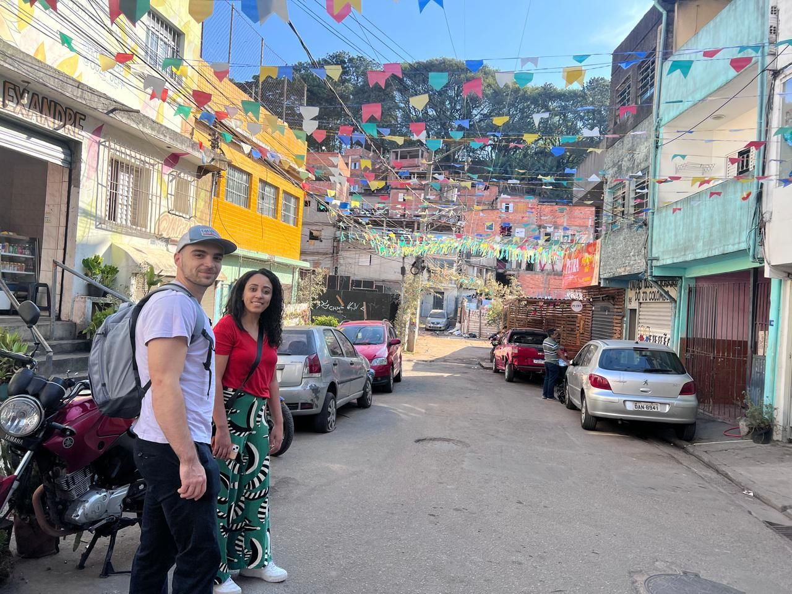
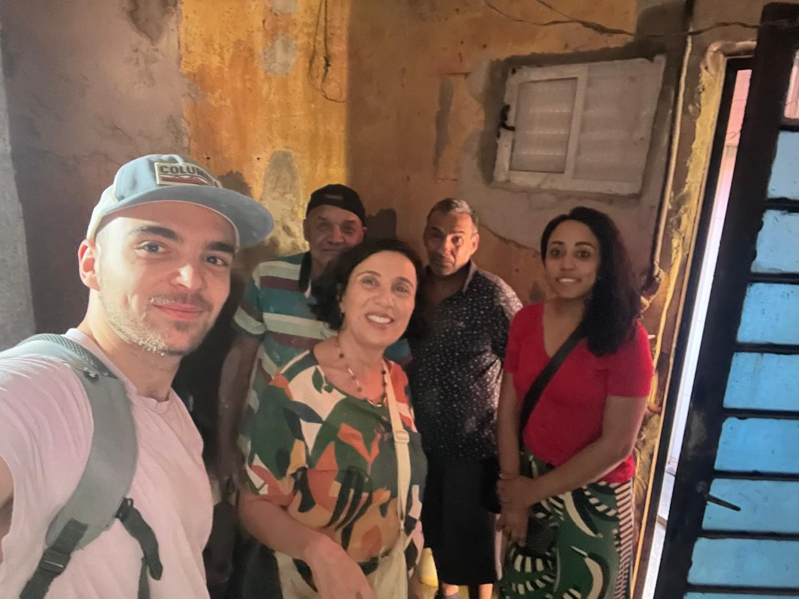
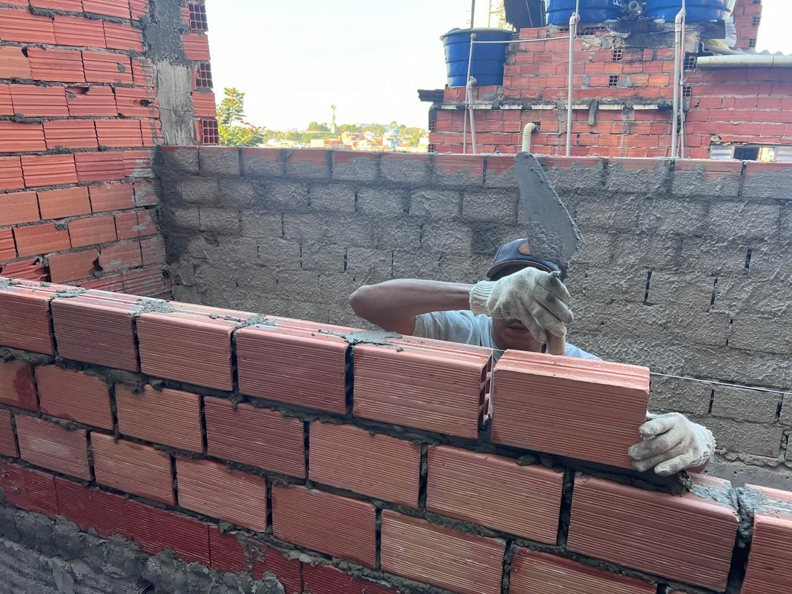
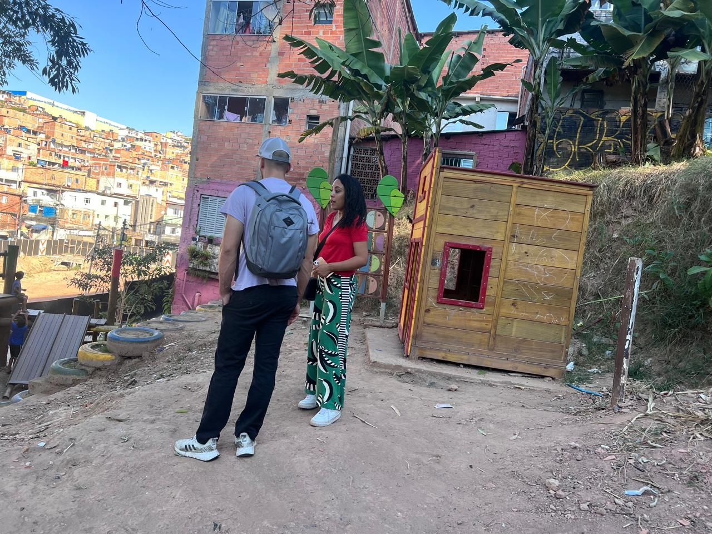
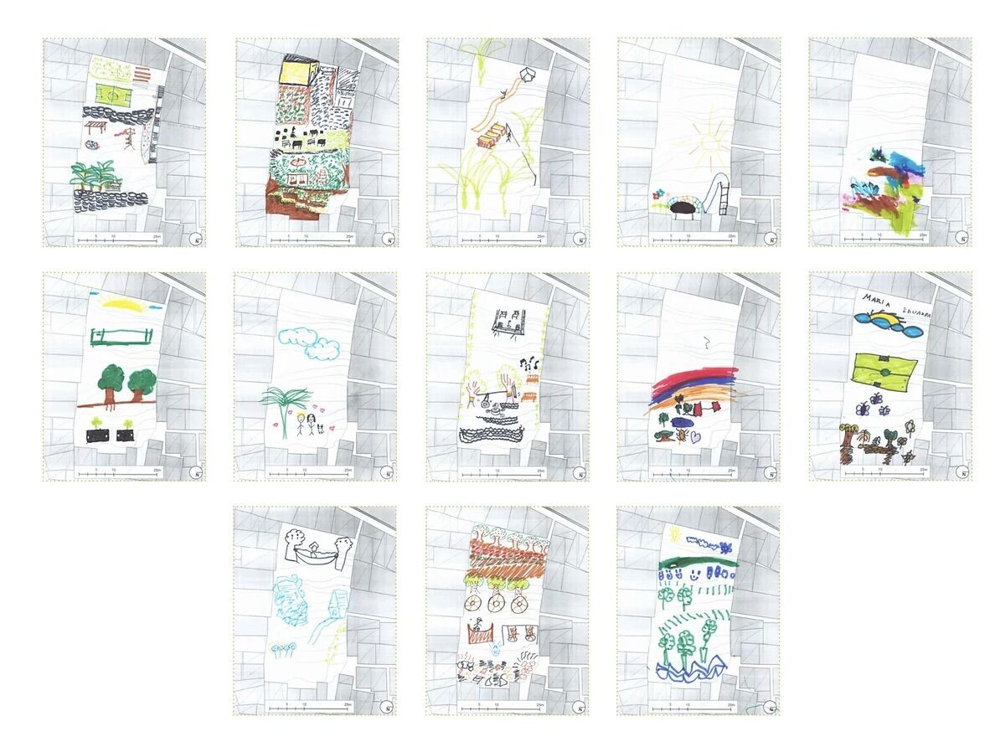

Lessons from Jardim Colombo 🇧🇷







Lições do Jardim Colombo 🇧🇷
A dualidade dos espaços urbanos muitas vezes nos deixa diante de uma realidade dura em que as distribuições funcionais, como infraestrutura e áreas verdes, estão longe de ser democratizadas. As cidades formais e informais cresceram lado a lado desde a criação das cidades.
Ester Carro, com seu extraordinário projeto Fazendinhando, está desafiando a qualidade do espaço e de seus habitantes na favela do Jardim Colombo, São Paulo. O projeto visa melhorar o espaço urbano da favela por meio de intervenções arquitetônicas e paisagísticas participativas.
Aprendi que intervenções impactantes geralmente começam em pequena escala. Não se trata de criar uma mudança maciça da noite para o dia, mas de iniciar um processo que muda gradualmente a percepção do ambiente e das pessoas que o habitam.
Graças a Ester, tive a incrível oportunidade de visitar uma favela latino-americana fora do contexto equatoriano. Os desafios e as lutas são notavelmente semelhantes, mas ver projetos como o Fazendinhando é profundamente inspirador. Essas iniciativas são cruciais à medida que repensamos os espaços urbanos, especialmente os assentamentos informais.
Você pode ler mais sobre isso em www.fazendinhando.org
Vamos continuar a apoiar e aprender com esses esforços inovadores que trazem esperança para nossas cidades. 🌱🏙️
Mais uma vez obrigado, Ester, por tudo.